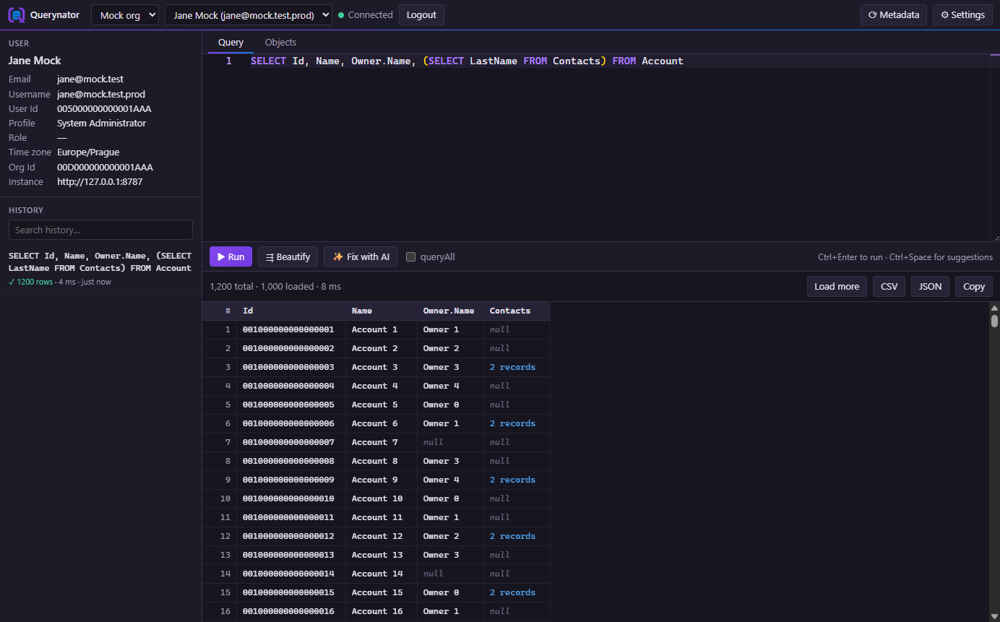
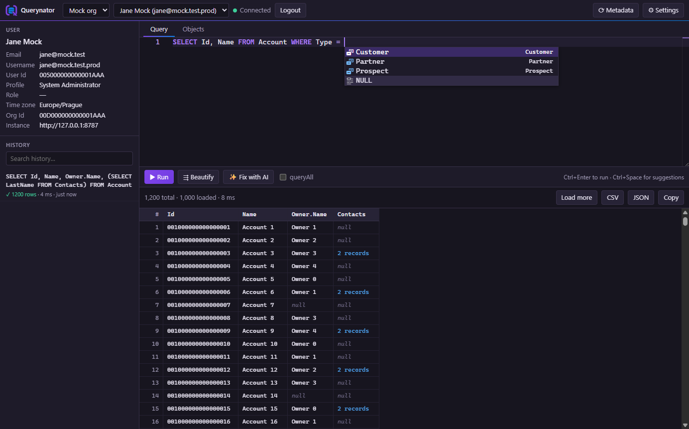
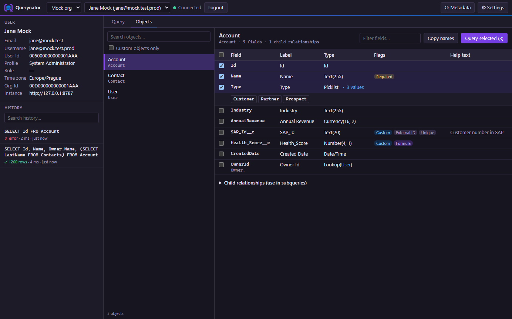
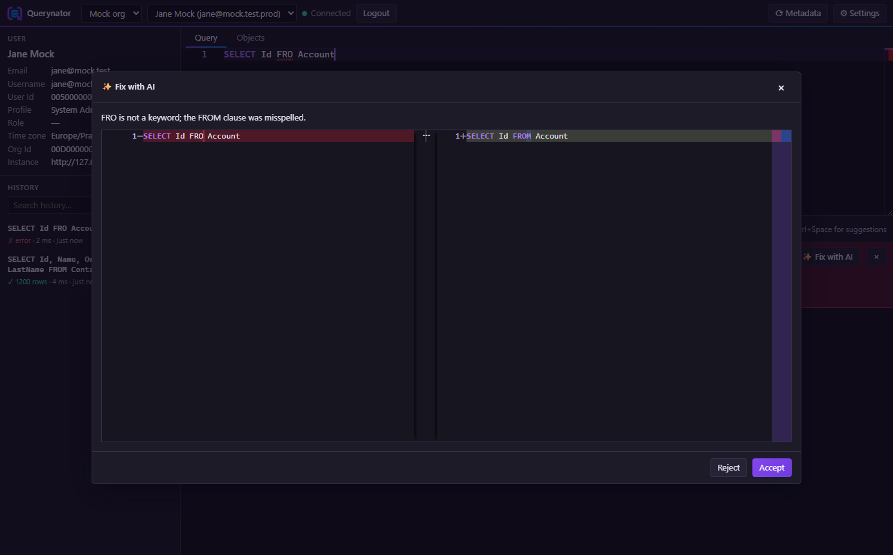

A fast desktop SOQL client for Salesforce. Autocomplete that knows your org, a proper results grid, and AI that fixes broken queries.

Built for developers and admins who live in queries.
Fields, relationships, child subqueries, picklist values and date literals, all based on the object in your FROM clause.
Load more, drill into subqueries, resize and reorder columns, export to CSV, JSON or the clipboard.
Send a failing query and the error to OpenAI, then review the fix side by side before accepting it.
Browse objects, fields, types, picklist values and child relationships, then query the fields you picked.
Several environments, several users per environment, with JSON import and export to share setups.
Tokens and keys are encrypted with the OS keychain. Everything runs locally; there is no Querynator server.
Syntax highlighting, Beautify, // comments with Ctrl+/, error markers and searchable query history.
Salesforce OAuth with PKCE, Azure AD SSO via a token service, or simply paste an access token.



Pick the installer for your system.
Signed by DevelMagic s.r.o. If SmartScreen warns, click More info → Run anyway.
Not notarized: the first time, right-click the app and choose Open. More
Open Settings → Add environment and choose how to sign in.
Create a Connected App with PKCE and callback http://localhost:1717/oauth/callback, then paste its consumer key.
Set the instance URL and paste a token, e.g. from sf org display. No app setup needed.
For orgs behind a service that exchanges Azure AD tokens for Salesforce tokens.